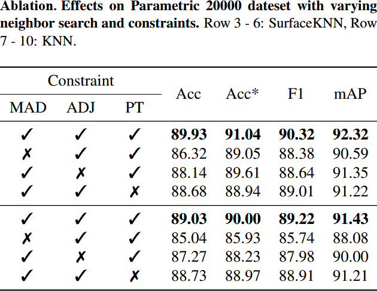
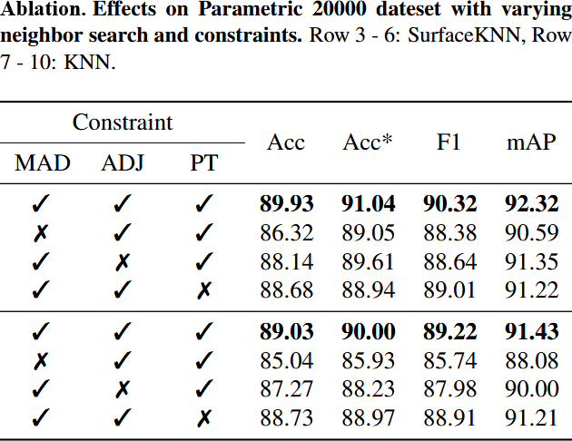

Abstract
Parametric point clouds are sampled from CAD shapes and are becoming increasingly common in industrial manufacturing. Most existing CAD-specific deep learning methods only focus on geometric features, while overlooking constraints which are inherent and important in CAD shapes. This limits their ability to discern CAD shapes with similar appearance but different constraints. To tackle this challenge, we first analyze the constraint importance via a simple validation experiment. Then, we introduce a deep learning-friendly constraints representation with three vectorized components, and design a constraint-aware feature learning network (CstNet), which includes two stages. Stage 1 extracts constraint feature from B-Rep data or point cloud based on shape local information. It enables better generalization ability to unseen dataset after model pre-training. Stage 2 employs attention layers to adaptively adjust the weights of three constraints' components. It facilitates the effective utilization of constraints. In addition, we built the first multi-modal parametric-purpose dataset, i.e. Param20K, comprising about 20K shape instances of 75 classes. On this dataset, we performed the classification and rotation robustness experiments, and CstNet achieved 3.52% and 26.17% absolute improvements in instance accuracy over the state-of-the-art methods, respectively. To the best of our knowledge, CstNet is the first constraint-aware deep learning method tailored for parametric point cloud analysis in CAD domain.

Idea Validation Experiments
Constraints are crucial for CAD shapes, can they be utilized to enhance deep learning methods' performance? To answer above question, we designed the following validation experiments. The objective is to compare the prisms shown in left figure with cuboids. In each experiment, only prisms with a specific angle are selected, creating a binary classification task between prisms and cuboids. Consequently, eight independent experiments are conducted to cover all angles. As the prism’s angle approaches 90°, its resemblance to cuboids increases, making it progressively more challenging to distinguish them. The constraint-aware model is built on PointNet++ backbone, this model predicts constraints and then adopts it for classification.
The experimental results are presented in the right figure, which demonstrating the constraint enhanced the model's comprehension of CAD shapes.
Framework
The top side illustrates the overall architecture of CstNet, comprising two stages. Stage 1 is designed for constraint acquisition. When B-Rep data is available, the CST-BRep module is utilized to extract constraints; otherwise, use the CST-PCD module. Stage 2 performs constraint feature learning, facilitating a deeper understanding of CAD shapes. The bottom side presents the details of module design.

Parametric20000 Dataset
Parametric20000 Dataset is a multi-modal CAD shapes dataset built by our team, which contains B-Rep, Mesh, and point cloud. Most existing CAD shape datasets consist of mesh files. While mesh files could approximate the appearance of CAD shapes, lack crucial boundary information. In contrast, B-Rep data serves as the native representation of CAD shapes and is therefore more suitable for dataset construction.
Experiments
We have conducted classification on MCB, Parametric20000, and segmentation on 360 Gallery.
 

Others
Constraint prediction experiments.
ABC:
MCB:
KNN and SurfaceKNN:
BibTeX
@misc{liao2024freehand,
title={Freehand Sketch Generation from Mechanical Components},
author={Liao, Zhichao and Huang, Di and Fang, Heming and Ma, Yue and Piao, Fengyuan and Li, Xinghui and Zeng, Long and Feng, Pingfa},
year={2024},
eprint={2408.05966},
archivePrefix={arXiv},
primaryClass={cs.CV},
url={https://arxiv.org/abs/2408.05966},
}